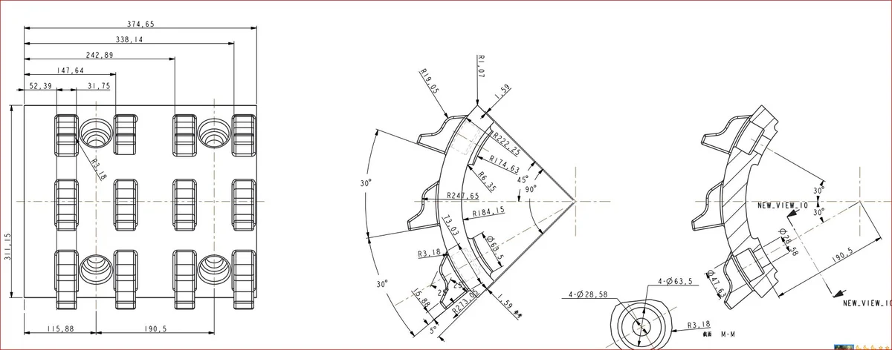
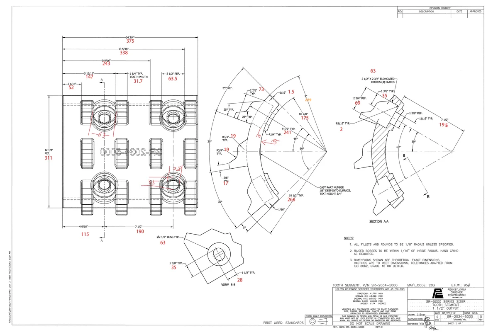
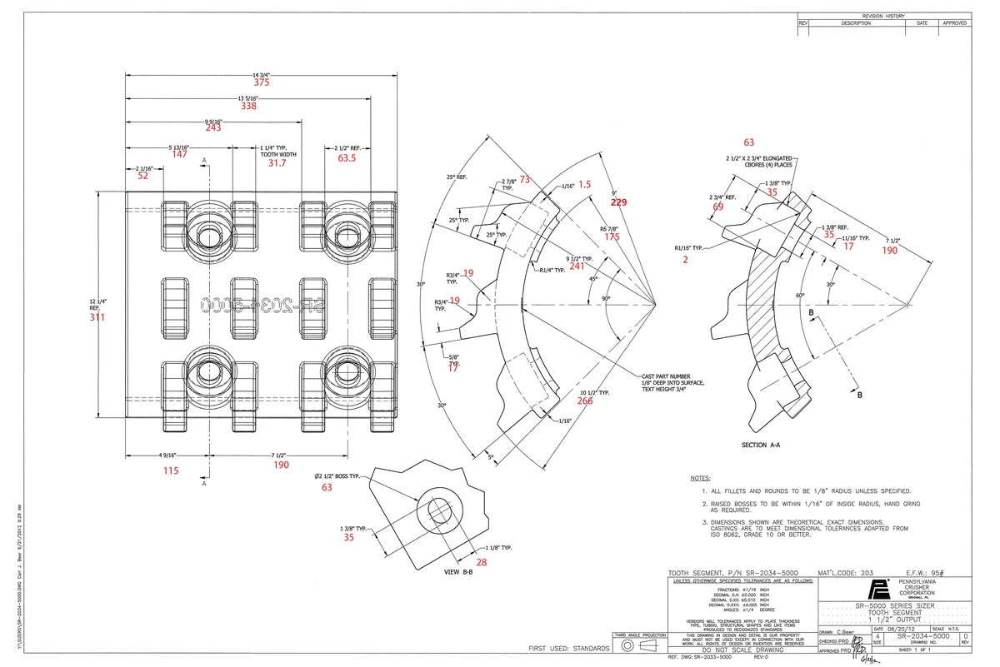
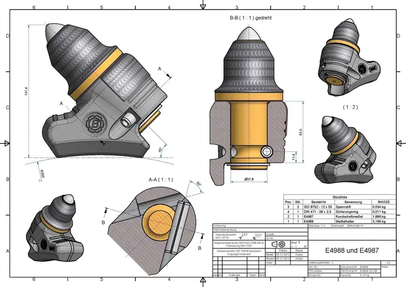
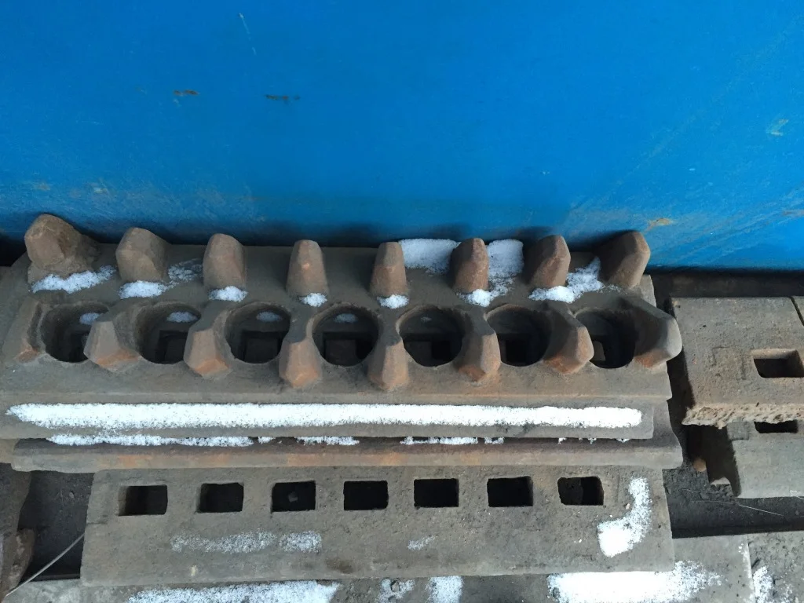
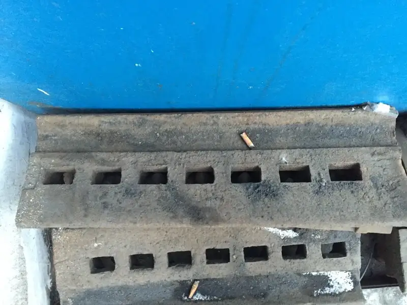

Pennsylvania Crusher
Bradford Breakers
Pennsylvania Bradford Breakers are the dominant primary crushing solution in coal processing. This rotary breaker simultaneously sizes and crushes coal while rejecting hard refuse. The rotating cylinder with screen plates and lifting shelves provides continuous breaking and sizing. Anranst provides Bradford tooth picks in ASTM A128 Grade B-2 and ZG30CrMnMo alloy steel for reliable, long-lasting performance.
Typical Applications
Coal preparation plantsCFB boiler coal sizingPower generation coal handlingROM coal sizing and refuse removalLignite processingAnthracite sizingMineral processing (saltpotashtrona)
Factory
Production Gallery — Anranst Workshop











Technical Data
Bradford Breakers — Models
| Models | Wear Parts |
|---|
| Equipment Type | Rotary Breaker / Sizing Crusher |
| Drum Diameter | 2,100–3,660 mm (7–12 ft) |
| Drum Length | 3,050–7,320 mm (10–24 ft) |
| Capacity | Up to 2,000 tph |
| Feed Size (ROM Coal) | Up to 600 mm |
| Product Size | Adjustable via screen opening (typically 50–150 mm) |
| Rotation Speed | 8–14 rpm (varies by diameter) |
| Drive Power | 75–450 kW (100–600 HP) |
| Primary Wear Part | Tooth Pick (Breaker Tooth) |
| Tooth Material (Option 1) | ZG30CrMnMo — HRC 45–55, AKV 10–15J |
| Tooth Material (Option 2) | ASTM A128 Gr.B-2 — HB 185–210 (work-hardens to 500+) |
Compatible Models (from OEM catalog)
9' X 12' (2.74 x 3.66)9' X 16' (2.74 x 4.88)9' X 20' (2.74 x 6.10)9’ X 24" (2.74 x 7.32)12' X 16' (3.66 x 4.88)12' X 20' (3.66 x 6.10)12' X 24' (3.66 x 7.32)12' X 28' (3.66 x 8.53)14' X 20' (4.27 x 6.10)14' X 24' (4.27 x 7.32)14' X 28' (4.27 x 8.53)14' X 32' (4.27 x 9.75)
Wear Parts
Two proven material grades for Tooth Picks: (1) ZG30CrMnMo low-alloy Cr-Mn-Mo cast steel — HRC 45–55 hardness with AKV 10–15J toughness, chemical composition C 0.26–0.34%, Si 0.40–0.80%, Mn 0.90–1.30%, Cr 0.90–1.30%, Mo 0.15–0.25%. Best for moderate-impact CFB boiler coal preparation. (2) ASTM A128 Grade B-2 Hadfield high-manganese steel — initial HB 185–210, work-hardens to HB 500+ under impact; tensile strength 80–120 KSI, yield 50–57 KSI; composition C 1.05–1.20%, Mn 11.5–14.0%. The ultimate choice for high-impact conditions with large ROM coal and hard refuse. Additional breaker plates in Mn13/Mn18; screen cylinder segments in Cr-Mo alloy steel.